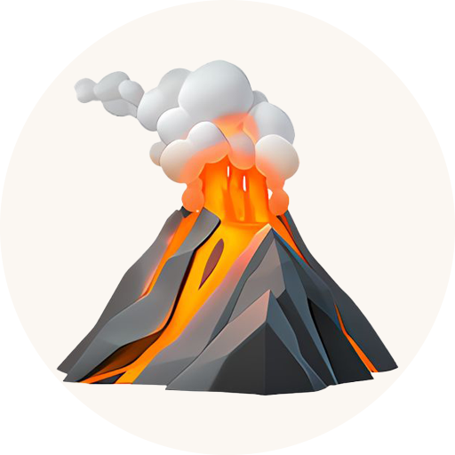

WebvulcanoIngyenes útmutató helyi vállalkozóknak
6 lépés, hogy nagyobb eséllyel bekerülj a top 3 közé, amikor valaki a városodban a szakmádra kérdez rá.
Bognár Lehel · weboldalfejlesztő
webvulcano.hu · info@webvulcano.hu
Egyre többen kérdezik meg a ChatGPT-t: „Kit ajánlasz, ha fodrász kell Győrben?” A válasz általában 3 név. Aki nincs köztük, az abban a pillanatban nem létezik a kérdező számára.
A jó hír: a ChatGPT nem sorsol. Rákeres a webre, és azokat a vállalkozásokat ajánlja, akikről egyértelmű, megbízható információt talál. Ezen pedig tudsz dolgozni.
1
Rákeres
„[szakma] [város] vélemények”, „Google értékelés” típusú keresésekkel.
2
Azonosít
Kik azok, akikről egyértelműen kiderül: mit csinálnak, hol és hogyan érhetők el.
3
Mérlegel
Értékelések, vélemények, más oldalak említései alapján dönt.
Őszintén: első helyet senki nem tud garantálni. A ChatGPT minden kérdésre kicsit máshogy válaszol, a sorrend futásról futásra változik. Amit el tudsz érni: hogy sokkal gyakrabban és nagyobb eséllyel téged ajánljon. Ez a 6 lépés erről szól.
A ChatGPT arra hivatkozik szívesen, akiről egy helyen, világosan kiderül minden. Egy Facebook-oldal vagy egy félkész honlap ehhez kevés.
A ChatGPT keresései gyakran kifejezetten a Google-értékeléseket keresik. A Google Cégprofil (régen: Google Térkép-adatlap) az egyik legfontosabb forrásod.
Ez a legerősebb jel. Egy több száz értékeléses vállalkozás sokkal gyakrabban kerül a javaslatok közé, mint egy tízes.
A modell nem csak a Google-t nézi: iparági katalógusokat, véleményoldalakat és helyi cikkeket is. Minél több megbízható helyen szerepelsz egyformán, annál biztosabb, hogy te vagy „az” a győri fodrász.
Amit a ChatGPT keresője nem tud elolvasni, azt nem is fogja ajánlani. Ez technikai rész, de pár perc egy fejlesztőnek.
A ChatGPT kérdésekre ad választ. Ha a te oldaladon ott a jó válasz, nagyobb eséllyel hivatkozik rád.
Próbáld ki magad: kérdezd meg a ChatGPT-t: „Kit ajánlasz, ha [szakmád] kell [városodban]?” Futtasd le 3–4-szer. Ha egyszer sem vagy benne, a fenti lépésekben van tennivaló.
Pipáld ki, ami már megvan. Ami üres, azzal kezdd.
Bognár Lehel vagyok, weboldalfejlesztő. Az a célom, hogy számokkal alátámasztva hozzam neked az érdeklődőidet.
Ingyen vázlatot kapsz, mielőtt bármit fizetnél · info@webvulcano.hu · webvulcano.hu